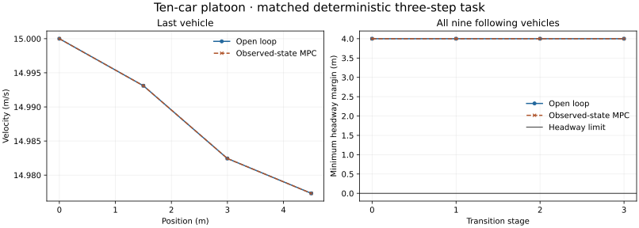

Open loop and MPC under the same constraints
The same three-transition problem drives both controllers. The open-loop controller plans once. Observed-state MPC receives the state after each action and solves the remaining problem to the same final stage.
The matched forecast and replay make this a deterministic comparison. Across 35 catalogue models, open loop completed 31 and MPC completed 30. The 30 complete pairs agreed within 1.14 × 10−13 in total cost and 8.68 × 10−8 in absolute applied-control difference.

Task and numerical checks
For each following car i, the headway constraint is . Here p is position in metres and v is velocity in metres per second.
Each profile uses the catalogue initial state and its declared nominal external input, or an explicitly authored zero input where the catalogue leaves it open. The reference shifts the first state by 10% of its scale, with each scale equal to the larger of one and the magnitude of its initial value. The same weighted state-tracking quadratic appears at each transition and twice its weight appears at the terminal stage. Each control has positive quadratic effort.
Cards 4, 9, and 10 use explicitly named continuous relaxations. Cards 24, 25, and 27 use authored numerical bounds. The raw records contain the matrices, trajectories, predictions, and native diagnostics. The independent checker compared 25,380 saved matrix entries with the catalogue export and recomputed dynamics, bounds, headway rows, positive-part budgets, and cost in original coordinates.
Outcomes and raw records for all 35 models
| Catalogue model | Open loop | Observed-state MPC | Absolute cost difference |
|---|---|---|---|
| 1. IP/SDN queues | Complete | Complete | 0 |
| 2. Puffer playback buffer | Complete | Complete | 0 |
| 3. 5G core signalling | Complete | Complete | 0 |
| 4. GPU cluster | Complete | Complete | 0 |
| 5. Battery pair | Complete | Complete | 3.47e-18 |
| 6. EV charging | Complete | Complete | 0 |
| 7. District heating | Complete | Complete | 2.22e-16 |
| 8. Commercial building | Complete | Complete | 1.11e-16 |
| 9. Bike stations | Solver not optimal | Solver not optimal | — |
| 10. Taxi zones | Complete | Complete | 0 |
| 11. Traffic lights | Complete | Complete | 0 |
| 12. Warehouse/store | Complete | Complete | 1.14e-13 |
| 13. Gas mixtures | Complete | Complete | 6.94e-18 |
| 14. Industrial load | Complete | Complete | 0 |
| 15. Bank liquidity | Complete | Complete | 0 |
| 16. Household debt | Complete | Complete | 5.55e-17 |
| 17. Inflation/unemployment | Complete | Complete | 0 |
| 18. 311 service requests | Complete | Complete | 6.66e-16 |
| 19. Shelter capacity | Complete | Complete | 0 |
| 20. Hospital loads | Complete | Complete | 1.73e-18 |
| 21. OSQP quadcopter | Complete | Complete | 0 |
| 22. Aerosonde test Jacobian | Complete | Complete | 0 |
| 23. Bicycle car + actuators | Solver unsupported | Solver unsupported | — |
| 24. OTTER test | Complete | Complete | 0 |
| 25. REMUS test | Complete | Complete | 0 |
| 26. Ten-car platoon | Complete | Complete | 0 |
| 27. Ten-generator ring | Solver unsupported | Solver unsupported | — |
| 28. Twenty-zone RC building | Solver unsupported | Solver unsupported | — |
| 29. 32 O-RAN queues | Complete | Complete | 2.22e-16 |
| 30. Thirty-bank ring | Complete | Solver not optimal | — |
| 31. Twelve institution queues/occupancy | Complete | Complete | 2.22e-16 |
| 32. 24-node CDN | Complete | Complete | 1.39e-17 |
| 33. Eight-node DDoS | Complete | Complete | 1.78e-15 |
| 34. Eight-zone AI datacentre | Complete | Complete | 1.67e-16 |
| 35. Twelve base stations | Complete | Complete | 0 |
How to interpret the five incomplete pairs
- Bicycle stations (model 9). The first station starts with 12 bikes. It loses at least five per transition, so its terminal inventory is at most −3. The task requires nonnegative inventory.
- Models 23, 27, and 28. HiGHS refused coefficients at or below its 10−12 removal threshold. The refusals describe backend admission.
- Reserve replenishment in the thirty-bank ring (model 30). The open-loop suffix from the first feedback observation gives a checked feasible continuation. The feedback route stopped after HiGHS withheld a numerical optimality claim. The separate sensitivity run completed with tolerance 10−7. The baseline retains the stop at 10−8.
Download and reproduce
Build the source-only driver against CSL SDK v0.1.1 with HiGHS enabled. The driver uses the installed CSL::controllers, CSL::model_catalogue, and CSL::highs_convex targets. Set SDK_PREFIX to the installation prefix and JSON_HEADERS to the directory containing the nlohmann/json 3.11.3 headers.
cmake -S source -B source/build -DCMAKE_BUILD_TYPE=Release -DCMAKE_PREFIX_PATH="$SDK_PREFIX" -DCAMPAIGN_JSON_HEADERS="$JSON_HEADERS"
cmake --build source/build
bash source/execute.sh replay
python source/audit.py source/replay source/frozen-catalogue-export.csvThe checker requires NumPy. The optional platoon renderer also uses Matplotlib.
To reproduce the separate tolerance diagnostic, build the driver from the diagnostic directory. Run model 30 with both of the recorded tolerances and compare its feedback status.
cmake -S tolerance-diagnostic -B tolerance-diagnostic/build -DCMAKE_BUILD_TYPE=Release -DCMAKE_PREFIX_PATH="$SDK_PREFIX" -DCAMPAIGN_JSON_HEADERS="$JSON_HEADERS"
cmake --build tolerance-diagnostic/build
tolerance-diagnostic/build/catalogue_episode 30 1e-8 > strict.json
tolerance-diagnostic/build/catalogue_episode 30 1e-7 > sensitivity.jsonDownload figures, source, and raw outcomes · ZIP checksum · Publication manifest · Independent audit · Stop diagnosis · Tolerance sensitivity audit